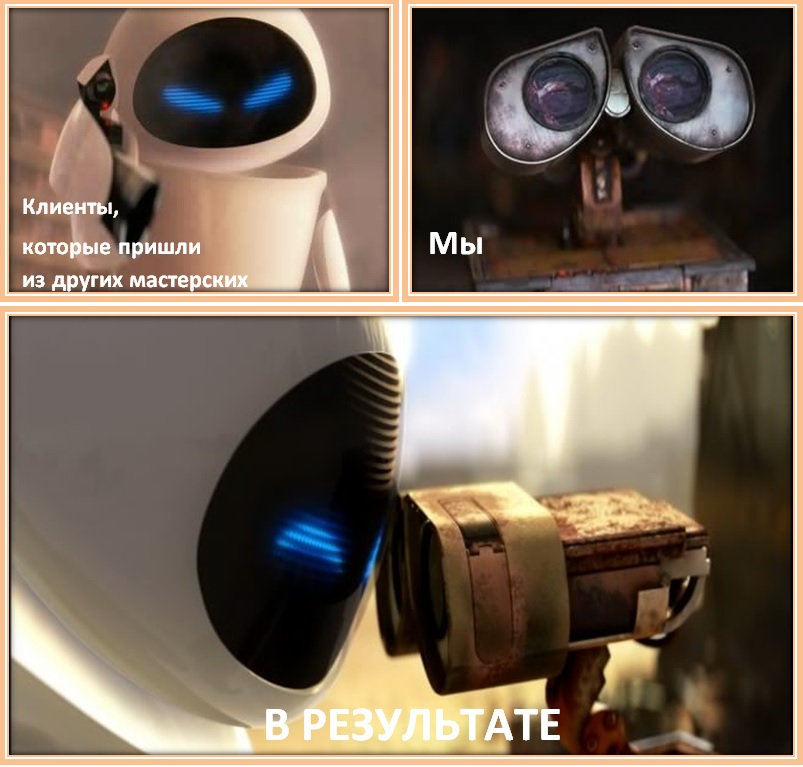
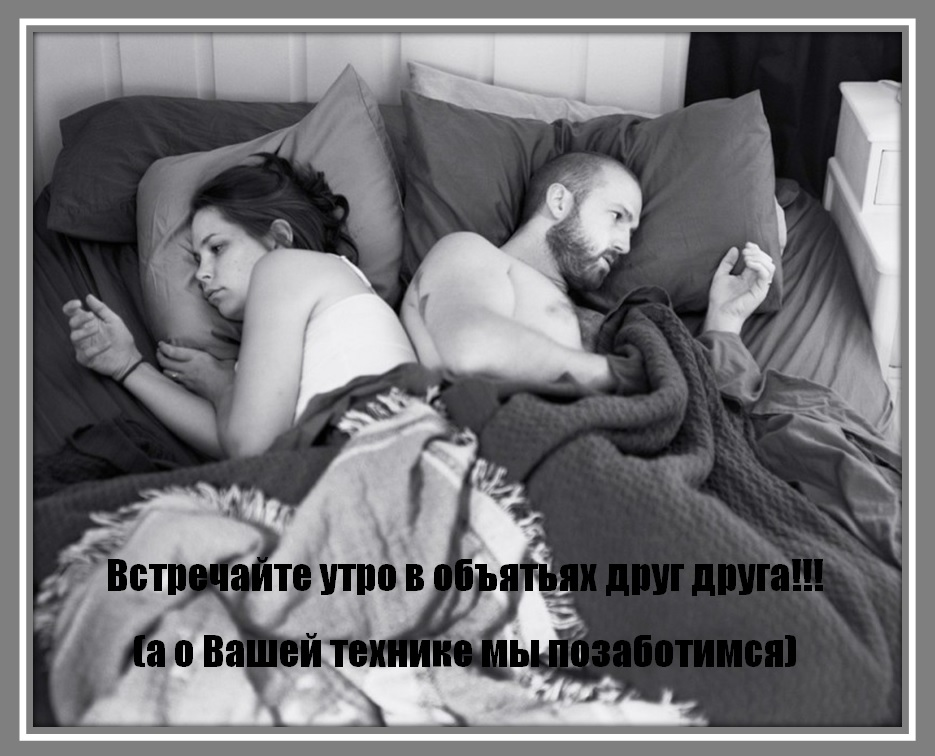
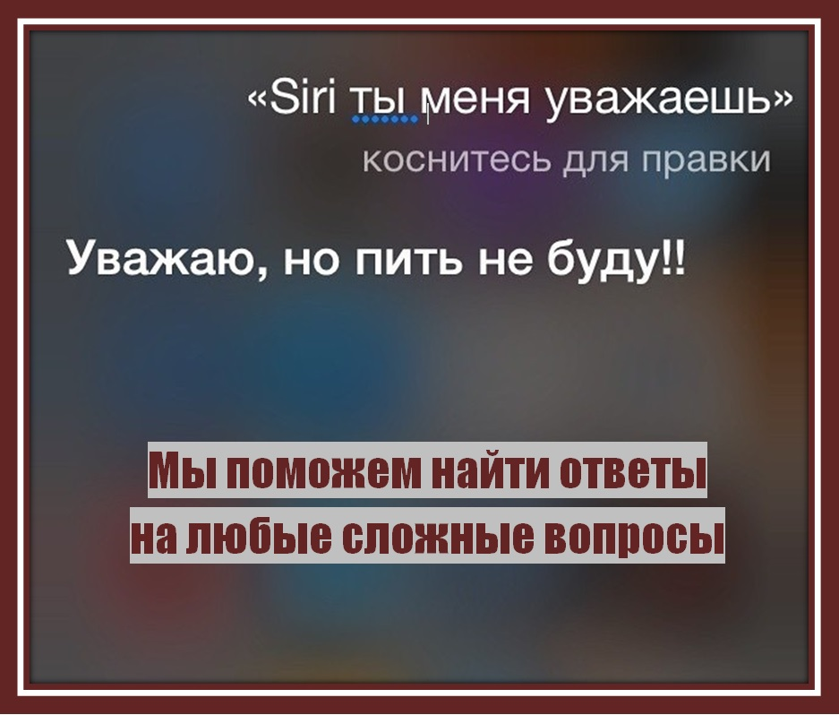
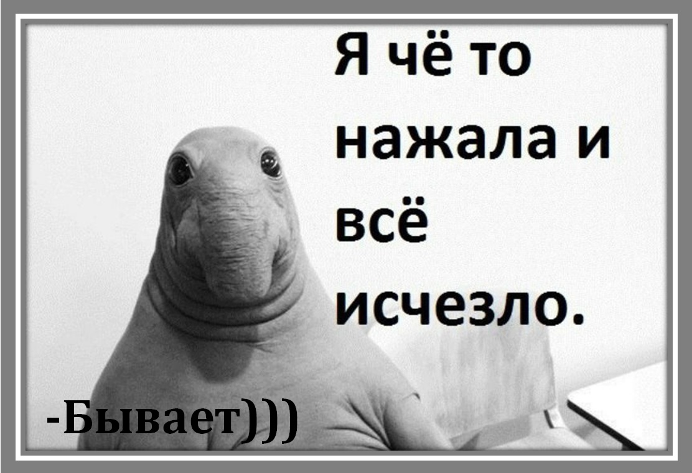
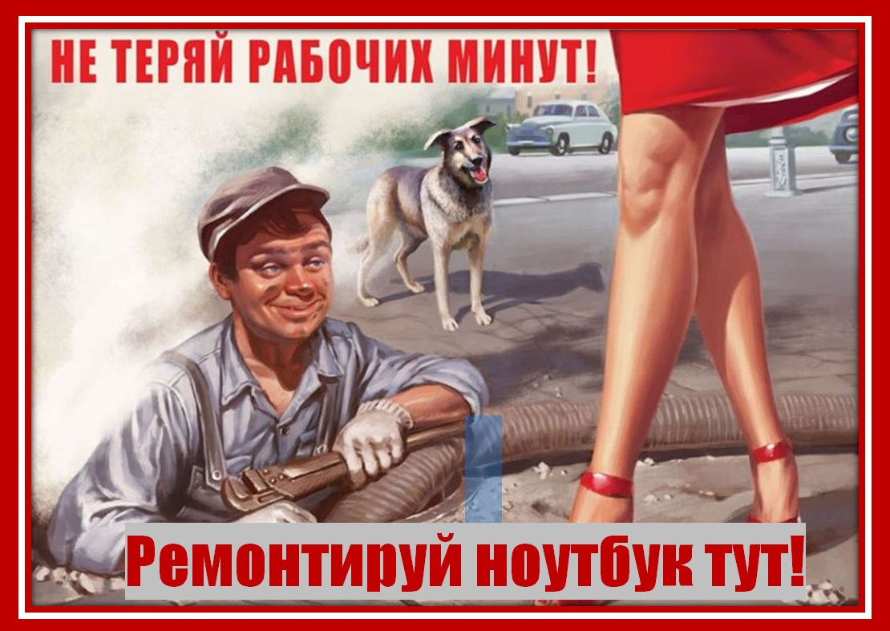
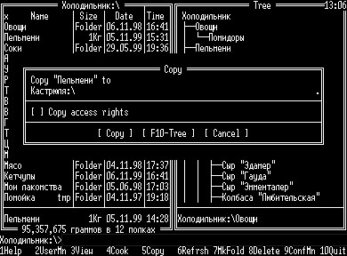

Шутки по теме


Доподлинно известно, что техника работает на белом дыме. Как только белый дым выходит, техника перестает работать.

Казалось бы, в работе мастера по ремонту электроники нет ничего романтичного или забавного. Однако казусные случаи происходят повсеместно, и вот один из них.
На днях ко мне пришла милая барышня, на дисплее смартфона которой появилась трещина. Обговорив сроки и стоимость работы, мы распрощались. Однако буквально через несколько минут обеспокоенная девушка вернулась.
И знаете зачем? Она спросила: «А приложения, установленные в телефоне, не выпадут при ремонте?» Я честно обещал ей собрать все, что выпадет из смартфона при моем вмешательстве и вставить обратно, в том числе, и приложения… Кстати, слово я свое сдержал.


Хороший программист характеризуется умением доказать почему задачу невозможно выполнить, когда ему просто лень её выполнять.

Кактус, 10 лет простоявший у компьютера, начал раздавать вай-фай

Звонок в службу технической поддержки:
— У меня компьютер не видит принтер; я уже и монитор на него повернула, а он все равно пишет, что его не видит. Что делать?
— Пальцем показывали?

Многие уже знают что наряду с программистами появилась такая славная народная профессия, как #ТЫЖПРОГРАММИСТ читать полностью

На днях ко мне пришла милая барышня, на дисплее смартфона которой появилась трещина. Обговорив сроки и стоимость работы, мы распрощались. Однако буквально через несколько минут обеспокоенная девушка вернулась.
И знаете зачем? Она спросила: «А приложения, установленные в телефоне, не выпадут при ремонте?» Я честно обещал ей собрать все, что выпадет из смартфона при моем вмешательстве и вставить обратно, в том числе, и приложения… Кстати, слово я свое сдержал.
— У меня компьютер не видит принтер; я уже и монитор на него повернула, а он все равно пишет, что его не видит. Что делать?
— Пальцем показывали?